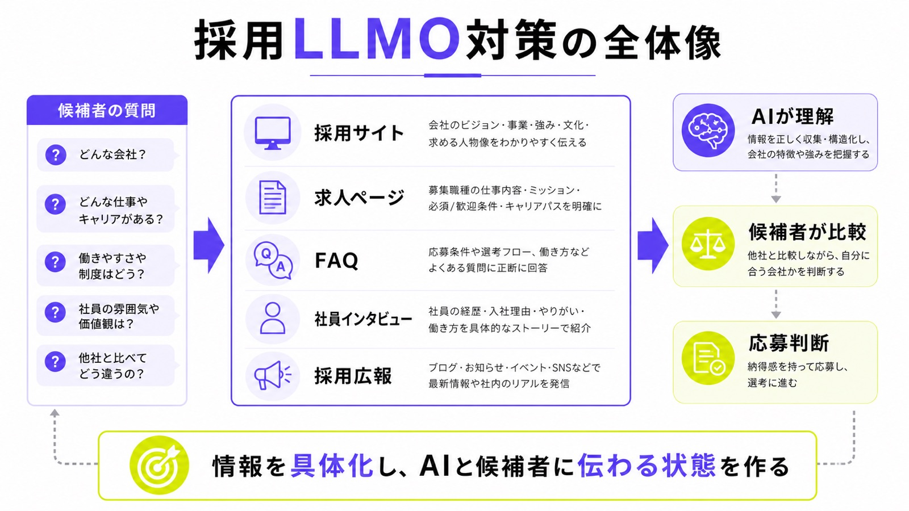
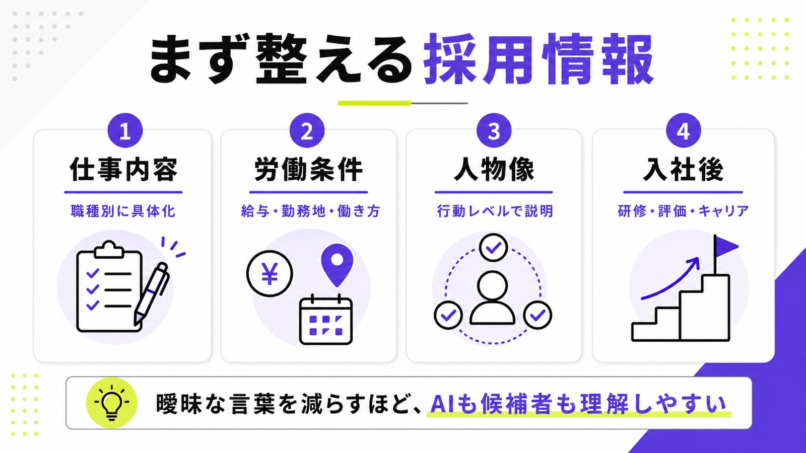
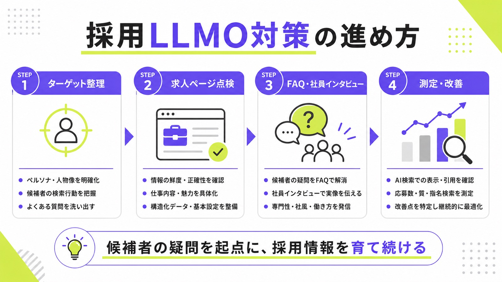

採用のLLMO対策とは？AI検索時代に候補者から選ばれる採用サイトの作り方

採用活動でも、求職者の情報収集は大きく変わり始めています。従来は求人媒体や検索エンジンで求人を探し、企業サイトや口コミを見て応募を判断する流れが一般的でした。しかし、今後はChatGPT、Gemini、Perplexity、GoogleのAI検索などに「この会社は働きやすいか」「未経験でも応募できるか」「この職種で成長できるか」と質問する場面が増えていきます。
そのなかで重要になるのが、採用におけるLLMO対策です。LLMO対策とは、AIが自社の採用情報を正しく理解し、候補者への回答に引用・参照しやすい状態をつくる施策です。
この記事では、採用におけるLLMO対策の基本から、採用サイト・求人ページ・採用広報で整えるべき情報、AI検索に拾われやすいコンテンツの作り方、実施時の注意点まで解説します。
目次

採用におけるLLMO対策とは
採用におけるLLMO対策は、単に求人ページへキーワードを入れる施策ではありません。候補者がAIに質問したとき、自社の採用情報が回答材料として扱われやすくなるように、仕事内容、働き方、制度、社員の声、FAQなどを整える取り組みです。
従来の採用SEOと重なる部分はありますが、目的は少し異なります。検索上位を狙うだけでなく、AIが候補者に説明しやすい情報を自社サイト内に蓄積することが重要です。

LLMO対策はAIに自社の採用情報を正しく理解させる施策
採用LLMO対策とは、AIが自社の求人情報や採用サイトを読み取ったときに、「どのような会社で、どのような人を採用したいのか」を正しく判断できる状態をつくる施策です。仕事内容、応募条件、働き方、給与、福利厚生、選考フローなどを、曖昧な表現のまま放置しないことが前提になります。
たとえば「成長できる環境です」とだけ書いても、AIにも候補者にも具体的な魅力は伝わりません。入社後にどのような業務を担当し、どのような研修を受け、どのような評価基準でキャリアアップできるのかまで書くことで、採用情報としての価値が高まります。
採用SEOとの違い
採用SEOは、「営業職 求人 大阪」「エンジニア 未経験 採用」などの検索キーワードで上位表示を狙う施策です。検索エンジン経由で求人ページや採用サイトに流入してもらうことが主な目的になります。
一方、採用LLMO対策では、候補者がAIに自然文で質問する場面を想定します。「未経験から営業職に挑戦しやすい会社はあるか」「子育てと両立しやすい職場か」「入社後にどのようなキャリアを描けるか」といった質問に対し、AIが回答を作るための情報源になることを目指します。SEOの延長ではありますが、より候補者の疑問に寄り添った情報設計が必要です。
LLMOだけを特別な裏技として考えない
採用LLMO対策では、「AI向けに特殊なファイルを用意すればよい」「構造化データだけ入れればよい」と考えるのは危険です。Google検索のAI機能においても、AI OverviewやAI Modeに表示されるための特別な最適化だけが成果を左右するわけではありません。
AI による概要や AI モードにコンテンツが表示されるための追加の要件はなく、別途特別な最適化を行う必要もありません。
つまり、採用LLMO対策の中心はテクニックではありません。候補者が知りたい情報を具体的に書き、ページを見つけやすくし、内容を最新に保つことが重要です。AIに拾われるための施策である前に、候補者に選ばれるための採用情報づくりだと考えるべきです。
採用LLMO対策が重要になっている背景
求職者は、求人票だけを見て応募を決めるわけではありません。企業サイト、口コミ、SNS、社員インタビュー、採用広報記事などを横断しながら、応募するかどうかを判断します。
AI検索が普及すると、この比較検討の一部をAIが代行するようになります。だからこそ、採用サイト側には「AIが参照できるだけの具体的な採用情報」が必要になります。
求職者の検索行動が具体化している
AI検索では、短いキーワードだけでなく、長く具体的な質問が使われやすくなります。採用領域でも同じで、「営業職 求人」ではなく、「未経験でも研修がある営業職」「大阪で転勤が少ない会社」「子育て中でも働きやすい職場」のように、条件や不安を含んだ質問が増えていきます。
企業側は、こうした質問に答えられるページを用意しておく必要があります。職種名や勤務地だけでなく、研修制度、転勤の有無、働き方、評価制度、社内の雰囲気まで書くことで、AIにも候補者にも伝わる情報になります。
求人票だけでは候補者の不安に答えきれない
求人票には、給与、勤務地、勤務時間、応募条件などの基本情報が載っています。しかし、候補者が本当に知りたいのは、それだけではありません。どのような人が働いているのか、残業はどの程度あるのか、未経験者はどのように育成されるのか、職場の雰囲気はどうかといった情報も重視されます。
AIが候補者の質問に答えるときも、求人票の情報だけでは回答が浅くなります。社員インタビュー、FAQ、職種紹介、制度説明、採用広報記事などを用意することで、AIにも候補者にも伝わる情報量を増やせます。採用LLMO対策では、求人票の外側にある情報設計が重要になります。
採用情報の少ない企業は比較対象に入りにくくなる
AIは、複数の情報源をもとに回答を作ります。そのため、採用サイトの情報が薄い企業は、候補者の質問に対する回答材料として扱われにくくなります。会社の魅力がないのではなく、AIが説明できるだけの情報が公開されていない状態です。
特に中小企業やベンチャー企業は、知名度だけで大手企業に勝つのは簡単ではありません。だからこそ、職種ごとの具体的な仕事内容、働き方、評価制度、社員の声、社内文化を丁寧に発信する必要があります。情報量と具体性が、AI検索時代の採用競争力になります。
採用LLMO対策でまず整えるべき情報
採用LLMO対策を始めるときは、いきなり採用記事を量産するよりも、まず基本情報を見直すことが重要です。求人ページや採用サイトの情報が曖昧なままでは、AIにも候補者にも正しく伝わりません。
最初に整えるべきなのは、仕事内容、労働条件、働き方、応募条件、選考フロー、入社後の流れです。ここが採用情報の土台になります。

仕事内容を職種ごとに具体化する
求人ページでよくある失敗は、「営業業務全般」「マーケティング業務全般」「事務作業全般」のように、仕事内容を広く書きすぎることです。これでは候補者が入社後の姿を想像できず、AIも具体的に説明できません。
営業職であれば、扱う商材、顧客層、新規営業と既存営業の比率、商談方法、1日の流れ、使うツール、目標の考え方まで書くべきです。事務職であれば、対応する業務範囲、社内外のやり取り、使用するシステム、繁忙期の有無などを明記します。職種ごとの解像度が高いほど、AI検索でも候補者の質問に対応しやすくなります。
給与・勤務地・働き方を曖昧にしない
採用情報では、給与、勤務地、勤務時間、休日、残業、転勤、リモートワークの可否などを曖昧にしないことが重要です。求人情報は候補者の応募判断に直結するため、「詳細は面談で説明します」だけでは不十分です。
候補者がAIに「この会社は転勤があるか」「残業はどの程度か」「リモートワークはできるか」と質問したとき、採用ページに必要な情報がなければ、正しい回答は期待できません。採用サイトは魅力づけの場であると同時に、正確な条件提示の場でもあります。
求める人物像を行動レベルで書く
「主体性のある人」「成長意欲の高い人」「チームワークを大切にできる人」といった表現は、採用ページでよく使われます。しかし、そのままでは抽象的で、候補者にとってもAIにとっても判断材料になりにくい表現です。
たとえば主体性を求めるなら、「決まった作業だけでなく、顧客対応の改善案を自分から出せる人」のように、実際の業務場面と結びつけて書きます。合う人だけでなく、合わない人も書けるとさらに親切です。候補者のミスマッチを減らし、AIにも会社の採用基準を伝えやすくなります。
入社後の流れとキャリアパスを明示する
候補者は、入社時点の条件だけでなく、入社後にどのような成長ができるのかも見ています。入社1か月目、3か月目、半年後、1年後に担当する業務を示すだけでも、応募前の不安はかなり減ります。
キャリアパスも重要です。マネジメント職を目指せるのか、専門職としてスキルを伸ばせるのか、評価はどのような基準で行われるのかを明記します。AIに「この会社で成長できるか」と質問されたとき、回答材料になるのは抽象的な理念ではなく、具体的な育成・評価・キャリアの情報です。
AI検索に拾われやすい採用コンテンツの作り方
採用LLMO対策では、採用サイト全体を候補者の質問に答えるメディアとして設計することが重要です。求人ページだけでは伝えきれない情報を、FAQ、社員インタビュー、職種紹介、採用広報記事で補完します。
ポイントは、企業が言いたいことを並べるのではなく、候補者が知りたいことから逆算することです。AI検索に拾われやすい採用コンテンツは、候補者の疑問に対して明確な答えを持っています。
候補者の質問を見出しに反映する
採用コンテンツでは、候補者が実際に聞きそうな質問を見出しに反映することが有効です。「未経験でも応募できますか？」「リモートワークは可能ですか？」「残業はどのくらいありますか？」「入社後の研修はありますか？」といった質問は、そのままFAQや記事見出しにできます。
AI検索は、自然文の質問に対して回答を作ります。そのため、候補者の疑問とページ内の見出しが近いほど、情報の対応関係がわかりやすくなります。採用担当者が面接前によく聞かれる質問、辞退理由になりやすい不安、入社後ギャップにつながる項目を洗い出し、採用サイト内に回答として蓄積することが大切です。
社員インタビューで一次情報を増やす
採用LLMO対策で強いコンテンツになるのが、社員インタビューです。どの会社でも言える一般論ではなく、その会社で働いている人の実体験を掲載できるため、AIにも候補者にも独自性のある情報として伝わりやすくなります。
社員インタビューでは、入社理由、前職、現在の仕事内容、1日の流れ、仕事で大変なこと、やりがい、入社前後のギャップ、今後の目標を具体的に書きます。「雰囲気が良い職場です」で終わらせず、どのような場面でそう感じるのかまで書くことが重要です。一次情報の厚みが、採用サイト全体の信頼性を高めます。
採用FAQを独立したページとして用意する
採用FAQは、AI検索との相性が良いコンテンツです。応募条件、選考フロー、面接回数、オンライン面接、服装、入社時期、副業、リモートワーク、残業、転勤、研修、福利厚生など、候補者の疑問をQ&A形式でまとめられるからです。
FAQは、候補者の不安を減らすだけでなく、採用担当者の対応工数も減らします。よくある質問がサイト上にまとまっていれば、応募前の離脱も防ぎやすくなります。AIが回答を作る際にも、質問と回答の関係が明確なFAQは参照しやすい情報になります。
採用広報記事で職場の文脈を補足する
採用広報記事は、求人票では伝えきれない職場の文脈を補足する役割を持ちます。会社の価値観、事業の将来性、経営者の考え方、チームの雰囲気、制度が生まれた背景などは、求人ページだけでは十分に伝えきれません。
たとえば「なぜ未経験採用を行っているのか」「なぜリモートワークを導入しているのか」「どのような人が活躍しているのか」を記事化すると、候補者は会社を立体的に理解できます。AIにとっても、会社の採用方針やカルチャーを説明する材料が増えます。
採用サイト・求人ページの内部対策
採用LLMO対策では、コンテンツの中身だけでなく、ページ構造や内部リンクも重要です。AIが情報を理解しやすいサイトは、人間の候補者にとっても使いやすいサイトです。
ただし、技術対策だけで成果が出るわけではありません。まずはページ内の情報を具体化し、そのうえで検索エンジンやAIが読み取りやすい構造に整えることが大切です。
職種別・勤務地別にページを分ける
複数の職種を1つの採用ページにまとめている場合、候補者にもAIにも情報が伝わりにくくなります。営業職、マーケター、エンジニア、カスタマーサポートなど、職種ごとにページを分けることで、仕事内容や応募条件を具体的に説明できます。
勤務地や雇用形態が複数ある場合も、必要に応じてページを分けると効果的です。「大阪勤務の営業職」「フルリモート可能なカスタマーサポート」など、候補者の検索意図に近いページを用意できます。ページを分けることで、AIも職種・勤務地・働き方の関係を把握しやすくなります。
JobPosting構造化データを設定する
求人ページでは、JobPosting構造化データの設定も検討すべきです。Google検索では、求人ページにJobPosting構造化データを追加することで、検索結果上の求人向け表示に掲載される可能性があります。
構造化データの追加により、求人情報を Google 検索結果に表示して、特別なユーザー エクスペリエンスを提供できるようになります。
ただし、構造化データはあくまで補助です。ページ上に書かれていない情報を構造化データだけで補っても、採用情報としては不十分です。職種名、仕事内容、勤務地、雇用形態、給与、応募条件などをページ本文に明記し、その内容と構造化データを一致させることが重要です。
採用サイト内の導線を整える
採用サイトでは、求人ページ、職種紹介、社員インタビュー、FAQ、制度紹介、会社情報が分断されないように設計します。候補者が営業職の求人ページを読んだあとに、営業社員のインタビューや評価制度、選考フローへ自然に移動できる導線が必要です。
内部リンクは、AIにとってもページ同士の関係を理解する手がかりになります。職種ページから関連する社員インタビューへ、FAQから求人ページへ、制度紹介から採用広報記事へリンクすることで、採用サイト全体の情報がつながります。点ではなく、面で採用情報を設計することが大切です。
採用情報の更新日を明確にする
採用情報は、古くなると信頼性が大きく落ちます。募集終了済みの求人、古い給与レンジ、すでに廃止された制度、過去の社員インタビューがそのまま残っていると、候補者に誤解を与える可能性があります。
求人ページには更新日を記載し、募集状況や条件を定期的に見直します。採用FAQや福利厚生ページも、制度変更があれば必ず更新します。AI検索に拾われることを考えても、古い情報が残っている状態は避けるべきです。正確性と鮮度は、採用LLMO対策の基本です。
採用LLMO対策で注意すべきポイント
採用LLMO対策は、AIに拾われることだけを目的にすると危険です。採用情報は、候補者の人生やキャリア判断に関わる情報です。正確性、誠実さ、最新性を欠いた発信は、応募後のミスマッチや信頼低下につながります。
特に求人情報では、法令や表示ルールへの配慮も必要です。魅力づけを行う場合でも、実態と違う表現や誤解を招く表現は避ける必要があります。
実態と違う魅力づけをしない
「自由な社風」「残業が少ない」「未経験でも安心」「高収入を目指せる」といった表現は、候補者にとって魅力的です。しかし、実態が伴っていなければ、応募後や入社後のミスマッチにつながります。採用LLMO対策でも、見栄えのよい表現より正確な情報を優先すべきです。
虚偽の表示又は誤解を生じさせる表示をしてはならないこととされています。
採用コンテンツを作るときは、候補者に良く見せる表現より、実態を正しく伝える表現を優先します。仕事内容、賃金、勤務地、働き方、募集主の情報は、正確かつ最新の内容に整える必要があります。
AI生成記事の量産だけに頼らない
採用コンテンツを増やすためにAIを使うこと自体は問題ありません。職種紹介のたたき台を作る、FAQの構成を作る、社員インタビューの原稿を整えるなど、AIは採用広報の効率化に役立ちます。
ただし、AIで一般論の記事を量産しても、採用LLMO対策としては弱いです。採用コンテンツでは、社員の実体験、制度の利用実績、現場の具体例など、自社にしかない情報を必ず加える必要があります。AIを使うほど、一次情報を入れる設計が重要になります。
求人媒体だけに依存しない
求人媒体は応募獲得に有効ですが、採用情報の資産化という意味では限界があります。掲載期間が終われば情報が残りにくく、職種理解やカルチャー理解を深めるコンテンツも十分に掲載できない場合があります。
採用LLMO対策では、自社サイトに情報を蓄積することが重要です。求人媒体で接点を作り、自社採用サイトで理解を深め、社員インタビューやFAQで不安を解消する流れを作ります。求人媒体と自社サイトを対立させるのではなく、役割を分けて活用することが大切です。
採用LLMO対策の進め方
採用LLMO対策は、一度にすべて実施する必要はありません。最初から大規模な採用メディアを作ろうとすると、更新が止まりやすくなります。まずは求人ページと採用FAQを整え、その後に社員インタビューや採用広報記事を増やす流れが現実的です。
重要なのは、候補者の疑問を起点にすることです。自社が伝えたいことだけでなく、候補者が応募前に知りたいことを順番にページ化していきます。

採用ターゲットと候補者の質問を洗い出す
最初に行うべきことは、採用ターゲットの明確化です。どの職種で、どのような経験を持ち、どのような価値観の人を採用したいのかを決めます。ターゲットが曖昧なままでは、採用サイトの情報もぼやけます。
次に、その候補者が応募前に抱く質問を洗い出します。「未経験でも応募できるか」「残業はどれくらいか」「どんな人が活躍しているか」「選考では何を見られるか」など、実際の面接やカジュアル面談で聞かれる内容をもとにすると質問の精度が上がります。
既存の求人ページを点検する
次に、既存の求人ページを見直します。仕事内容、応募条件、給与、勤務地、勤務時間、休日、福利厚生、選考フロー、入社後の流れが十分に書かれているかを確認します。情報が古い場合は、更新日や募集状況も見直します。
点検するときは、候補者の視点で読むことが重要です。「このページだけで応募判断ができるか」「不安が残る項目はないか」「他社との違いが伝わるか」を確認します。AIに拾われるかどうか以前に、人間の候補者にとって判断しやすいページになっているかを見ます。
FAQと社員インタビューから着手する
採用LLMO対策で最初に追加しやすいのは、FAQと社員インタビューです。FAQは候補者の疑問に直接答えられるため、短期間で採用サイトの情報量を増やせます。選考、働き方、制度、入社後の流れなど、よく聞かれる質問を優先して作成します。
社員インタビューは、自社固有の一次情報を増やせるコンテンツです。職種ごとに1人ずつでも掲載できれば、仕事内容や社内の雰囲気が伝わりやすくなります。最初から完璧な採用メディアを目指すより、応募判断に直結する情報から順番に増やすほうが成果につながります。
効果測定と改善を続ける
採用LLMO対策の成果は、検索順位だけでは判断できません。Google Search Consoleで採用関連クエリの表示回数やクリック数を確認しつつ、採用サイトの閲覧数、求人ページの滞在時間、応募率、面接移行率、内定承諾率なども見ます。
また、面接やカジュアル面談で「どの情報を見て応募したか」「応募前に不安だったことは何か」を聞くことも重要です。候補者の声をもとにFAQや職種ページを改善すれば、採用サイトは少しずつ強くなります。LLMO対策は一度の作業ではなく、採用情報を育てる継続的な取り組みです。
まとめ：採用LLMO対策は候補者に選ばれるための情報設計である
採用LLMO対策は、AI検索に引用されるためだけのテクニックではありません。候補者が知りたい情報を、正確に、具体的に、わかりやすく届けるための採用情報設計です。
求人ページ、職種紹介、FAQ、社員インタビュー、制度紹介、採用広報記事を整えることで、AIにも候補者にも理解されやすい採用サイトになります。特に重要なのは、自社にしかない一次情報を増やすことです。抽象的な魅力づけではなく、仕事内容、働き方、評価制度、社員の実体験を具体的に伝える必要があります。
AI検索時代の採用では、情報が少ない企業ほど比較対象に入りにくくなります。採用サイトを単なる求人掲載ページとして扱うのではなく、候補者の疑問に答える情報資産として育てることが、これからの採用競争力につながります。
参考リンク
参考：Google 検索セントラル｜AI 機能とウェブサイト